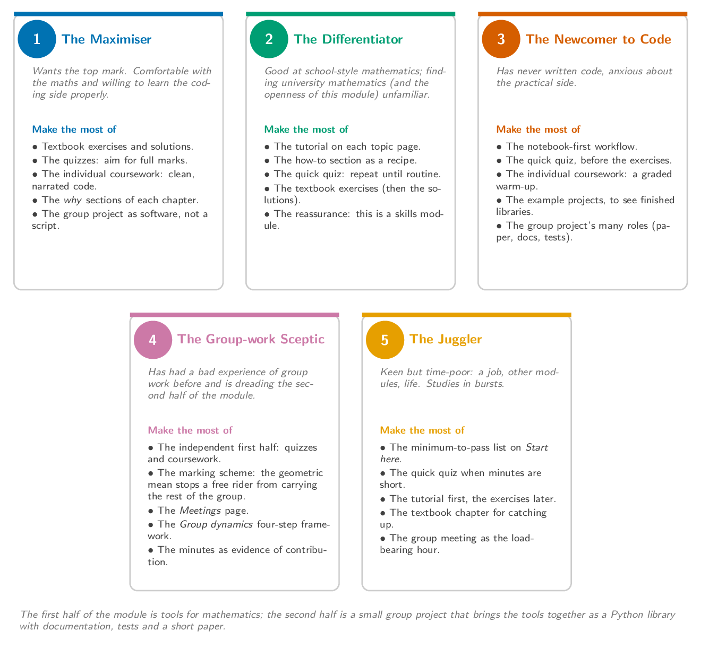

Whoever you are, this module is designed to be predictable. The first half is
about using a mathematics-oriented set of Python tools; the second half is a
group project in which you build a small library of your own. The
schedule lists every topic; the
Assessment page lists every component and
how marks are combined.
The five students below are caricatures, but most of us are a mix of them.
Find the one closest to you and follow the signposts.

The minimum to pass
If you do nothing else, do this, in order:
Read the Assessment page so you know
how marks are combined: quizzes plus an individual coursework plus a
group project, weighted as set out there.
For every topic on the schedule, start
with the quick quiz at the top of the page to check the basics, then
work through the tutorial and the how-to from the textbook
Python for mathematics.
Submit each weekly quiz and the individual coursework on time.
In the second half of the module, attend every group meeting and let the
secretary record you as present in the minutes. Your individual
contribution mark for the group project is based on this record.
That is the whole target. It is finite and it does not change much from
year to year.
If you are aiming for the top mark
Going beyond the minimum:
Work the exercises at the end of each textbook chapter, not only the
tutorial. The solutions are there so you can
check your reasoning.
Aim for the top end of the quizzes: every quiz reshuffles, so you
can keep attempting until you are answering quickly and confidently.
Treat the individual coursework as a chance to write clean,
well-narrated code; the marking scheme rewards communication as well as
correctness.
Use the facilitator-style chapters of the textbook (the why
sections) to deepen your understanding beyond the tools.
Take the group project seriously as a piece of software: read the
Assessment marking scheme and aim for
the exemplary level in every component.
The example projects
linked from the Assessment page are worked submissions. Read them as
a model for what a strong submission looks like, not as a ceiling.
If you came here because you are good at differentiating
You may have signed up to a mathematics degree because school mathematics
came naturally, and the openness of university mathematics (and of this
module in particular) is taking some getting used to. The good news is
that almost nothing on this module is school-style "find the answer"
mathematics. It is mostly new skills: writing code, writing about
mathematics, organising a project, working in a group.
Treat each topic as a skill, not a test. The point of the tutorial
on each topic page is to walk you through the tool; the point of the
how-to is to show you the moves; the point of the exercises is
to let you practise.
The quick quiz at the top of each topic page reshuffles, so there
is no harm in repeating it until the basics feel routine.
You are not behind. By the end of the module you will be writing and
testing your own Python library.
If you do not think you are a coder
You do not have to be a coder when you start. The module is structured so
that the first half introduces tools one at a time, with worked
examples, and the second half lets you build something using those
tools as part of a group.
Lean on the notebook-first workflow: every tools-for-mathematics
topic starts in a notebook where you can explore.
Use each topic's quick quiz to confirm the basics have stuck before
the exercises.
In the second half of the module, you do not need to write code from
day one to be a valuable group member. Taking minutes, writing the
paper, drafting the documentation and running the tests are all part of
the project. The marking scheme rewards each of these.
The example projects
linked from the Assessment page show what finished libraries look
like, with all of the pieces in place. They are worth reading even
before you start writing your own code.
If you are dreading the group project
Group work can be a sore subject if you have had a bad experience of it
before. The first half of the module is independent: every quiz, the
individual coursework, and your engagement with the tutorials are all
yours alone. The second half is deliberately scaffolded so that the
group project is fair and not a free-for-all.
Get the individual components done well early: the quizzes and the
individual coursework are independent of any group and account for
40% of your mark.
Read the Assessment page closely.
Your individual mark for the group project is recorded weekly via the
meeting minutes and combined with the group mark using a geometric mean,
which prevents a free rider from carrying the rest of the group and
rewards consistent contribution.
Read the Meetings page so
that you know what a meeting is for and what it is not for.
Read the Group dynamics
page. The four-step framework for handling disagreement is deliberately
prescriptive; you should be able to recite it to yourself in the middle
of a meeting.
If you are short on time
If you are juggling the module with everything else:
Use the minimum-to-pass list above to prioritise.
The quick quiz on each topic is the fastest way to test yourself
when you only have a few minutes; the weekly quiz is also the cheapest
mark in the module.
Skim the textbook chapter before each topic's class; you do not have
to read every section to make the tutorial worthwhile.
During the group project the weekly meeting is the load-bearing
hour: turn up, contribute, let the secretary record you present in
the minutes.